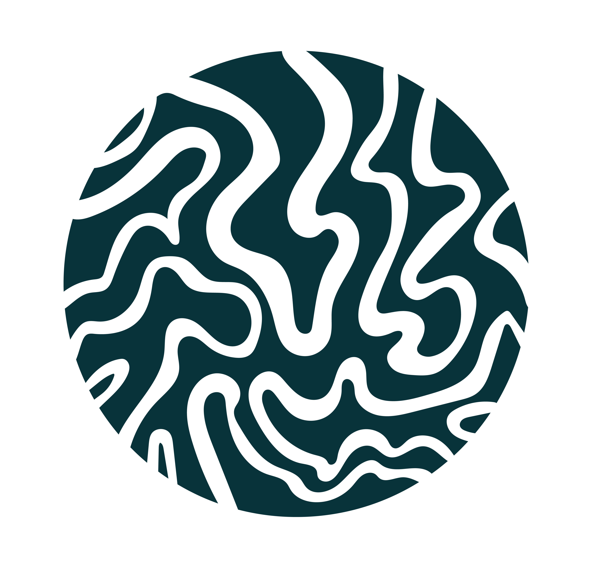
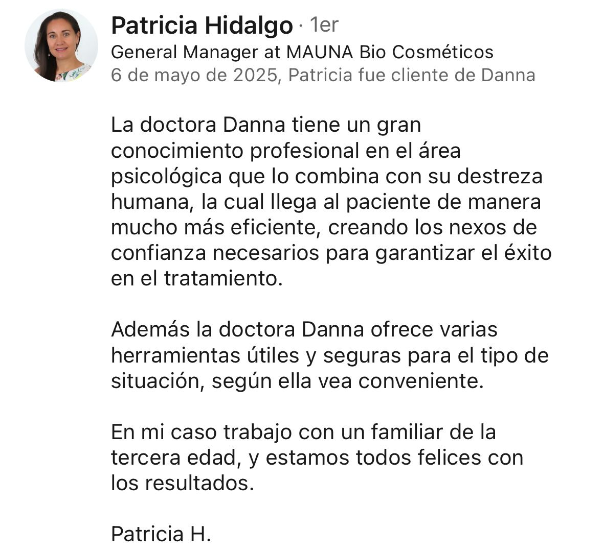
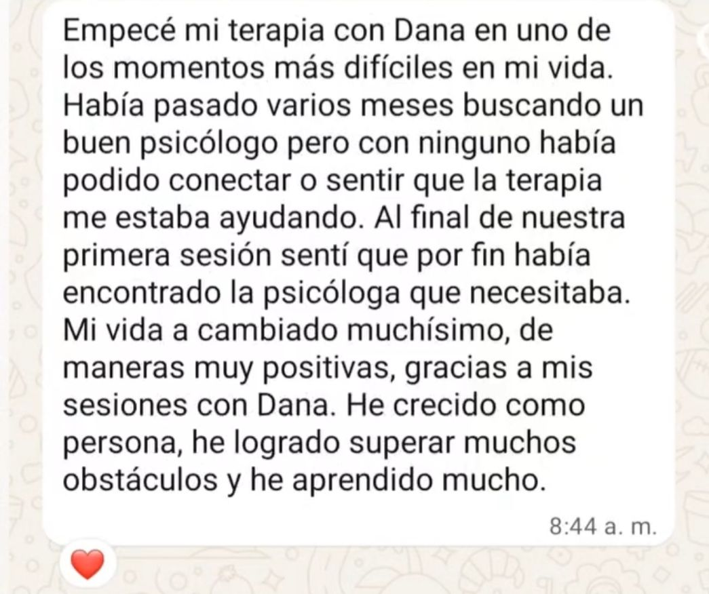

A veces se llega a terapia por una crisis, una pérdida, una relación o porque simplemente ya no se sienten bien. En el proceso, muchas veces empiezan a comprender que eso que hoy les afecta también se conecta con experiencias, heridas o patrones que vienen de más atrás.
Un espacio para comprender mejor lo que estás viviendo y empezar a trabajarlo con más claridad.
Más allá de la primera consulta, lo importante es que el proceso haga sentido, aporte claridad y ayude a moverse de otra manera frente a lo que se está viviendo.


El proceso empieza con una primera consulta para comprender mejor lo que estás viviendo y qué necesita más atención en este momento. A partir de ahí, el trabajo va explorando también tu historia, vínculos y patrones, para no quedarnos solo con lo que hoy duele, sino entender mejor lo que hay detrás.
Mi forma de acompañar combina escucha clínica, profundidad y una dirección clara del proceso. No se trata solo de hablar de lo que pasa, sino de ir entendiendo con más precisión qué se mueve, cómo se repite y qué necesita ser trabajado.
Cada proceso es distinto. El trabajo se va construyendo según lo que aparece, respetando tus tiempos, sin forzar, pero sin quedarnos tampoco en la superficie. Si algo importante ocurre entre sesiones, puedes escribírmelo para tenerlo presente.
Cada proceso es distinto, pero este suele ser el recorrido general con el que empezamos a trabajar.
Conversamos sobre lo que estás viviendo, tu motivo de consulta y aquello que hoy necesita más atención.
Exploramos tu historia, vínculos, experiencias y patrones para entender mejor lo que te afecta y cómo se ha ido sosteniendo en el tiempo.
Acompañamos lo que va apareciendo en terapia con más claridad, profundidad y seguimiento, respetando tu ritmo y lo que necesite ser trabajado.
No se trata de una sesión aislada, sino de un proceso acompañado, con estructura y seguimiento.
Un primer espacio para comprender tu motivo de consulta, el momento que estás viviendo y aquello que hoy necesita más atención.
Una mirada más amplia a tu historia, vínculos y patrones para entender mejor lo que te afecta y no quedarnos solo con lo superficial.
Sesiones orientadas a explorar y trabajar lo que va apareciendo, con más claridad, profundidad y dirección.
Si ocurre algo importante o quieres dejar una novedad presente en el proceso, puedes escribírmelo para tenerlo en cuenta.
La confianza, la claridad y el seguimiento suelen ser tres cosas que más se repiten en quienes han pasado por consulta.
“Para mí ha sido de mucha ayuda, siempre me sentí muy cómoda y en un lugar seguro, me diste mucha claridad de mis dudas y me ayudó mucho a comenzar a sanar.”
“Las sesiones han sido muy buenas y alentadoras, brinda la confianza necesaria para abordar temas difíciles y me ha ayudado a entender mejor mi situación.”
Acompaño procesos terapéuticos desde una mirada que busca ir más allá del motivo puntual por el que una persona llega a consulta. Muchas veces, lo que hoy duele también se conecta con experiencias, heridas o patrones que vienen de más atrás.
Trabajo respetando los tiempos de cada persona, sin forzar, pero sin quedarnos solo en la superficie. Mi intención es ofrecer un espacio donde alguien pueda sentirse acompañado y empezar a comprender con más claridad lo que le está pasando.
La idea es que el proceso sea claro también en lo práctico. Aquí tienes la forma en que trabajo y los valores actuales de consulta.
Un primer espacio para conocernos y entender con más claridad lo que estás viviendo.
Para continuar el proceso con sesiones individuales según lo que se vaya trabajando.
Recomiendo empezar con una sesión por semana durante el primer mes y luego evaluar cómo continuar según cada caso.
Cada sesión tiene un tiempo asignado y se trabaja dentro de ese espacio.
Si ya vienes con la idea de empezar, esta parte te ayuda a resolver lo práctico sin seguir dando vueltas.
La atención puede ser online o presencial, según lo que necesites y la disponibilidad.
Es un primer espacio para conocernos, comprender con más claridad lo que estás viviendo y empezar a identificar qué necesita más atención en este momento.
Generalmente recomiendo empezar con una sesión por semana durante el primer mes. Después de eso, se evalúa cómo continuar según cada caso.
Cada consulta tiene una duración de 1 hora y 30 minutos.
La primera consulta tiene un valor de $30. Si decides continuar, puedes hacerlo con sesiones individuales de $50 o con un proceso inicial de 4 sesiones por $160.
Sí. Si ocurre algo importante o quieres dejarme una novedad para tenerla presente en el proceso, puedes escribirme. Si es algo que requiere más contexto o profundidad, lo mejor será conversarlo en consulta.
Sí, puedes reagendar una vez con al menos 12 horas de anticipación.
Cada consulta tiene un tiempo asignado. Si llegas tarde, la sesión se realiza con el tiempo restante. Si no asistes, o si no reagendas con al menos 12 horas de anticipación, la sesión se pierde. Las consultas no son reembolsables.
A veces no hace falta tener todo claro para pedir ayuda. Basta con reconocer que algo necesita ser mirado de otra manera.
Agenda tu primera consulta